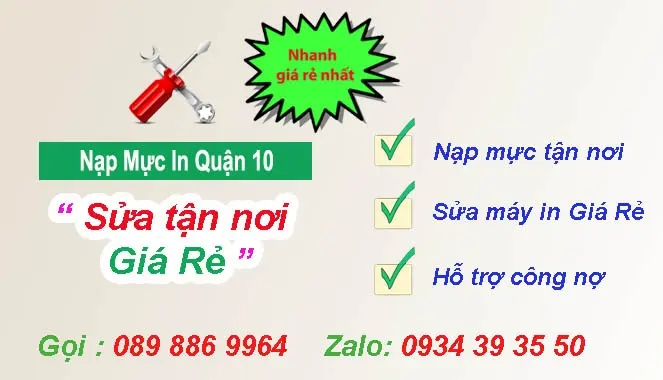

Nạp Mực Máy In Quận 10 | " Tận Nơi - Giá Rẻ - 24/7 "
Nạp mực máy in tại nhà Quận 10 là đơn vị chuyên bơm mực máy in tận nơi giá rẻ. Có mặt nhanh nhất chỉ 20 phút. Hi-Tech nhận thay mực in tất cả các loại như: Hp - Canon - Samsung - Brother - Ricoh ... mua bán hộp mực máy in tại quận 10. Kỹ thuật viên luôn túc trực tại khu vực đường sư vạn hạnh, có mặt siêu tốc, khắc phục sự cố kịp thời. Tel: 089 886 9964 - Zalo: 0934393550

TRUNG TÂM MỰC IN HI-TECH
77 Cửu Long, Phường 15, Quận 10
Tel : 089 886 9964 Zalo : 0934 39 35 50
Tới nhanh nhất chỉ 20 Phút
"Nạp mực tận nơi - Bơm mực in tại nhà khách hàng"

Nơi Nạp mực máy in quận 10 uy tín.
Hiện nay trên khu vực quận 10 nói riêng và ở khu vực TPHCM nói chung. Có rất nhiều cửa hàng, công ty, nạp mực máy in quận 10 giá rẻ tuy nhiên để Quý khách lựa chọn một dịch vụ Uy tín - Chất lượng – Giá rẻ với chế độ phục vụ và hậu mãi tốt không thực sự dể dàng
Nắm bắt được nhu cầu đó của Quý khách hàng Chúng tôi đã xây dựng một dịch vụ Bơm mực máy in tại các quận huyện TPHCM với chế độ phục vụ tận tình, hỗ trợ kỹ thuật tốt, chế độ hậu mãi vô cùng tuyệt vời và đặt biệt luôn luôn vì khách hàng mà phục vụ.
Chúng tôi tự tin đáp ứng được các yêu cầu của khách hàng. Hãy gọi ngay dịch vụ nạp mực máy in tại Quận 10 của chúng tôi khi máy in của quý khách hết mực hoặc gặp sự cố. Chúng tôi cam kết sẽ có mặt chỉ 20 phút
Thế mạnh bơm mực in quận 10 của Hi-Tech ?
Với đội ngũ kỹ thuật viên chuyên nghiệp, nhiều năm kinh nghiệm, tay nghề cao, luôn làm việc với tinh thần cao nhất
Mực in nhập khẩu từ malaysia, Japan cho chất lượng bản in săt nét, tăng cường tuổi thọ máy in, hộp mực
Bơm mực máy in tại nhà quận 10, tiết kiệm chi phí doanh nghiệp
tại quận 10 - Công ty mực in hi-tech bơm mực máy in tận nơi quận 10 khách hàng, có bảo hành uy tín
Linh kiện thay thế chính hãng, có bảo hành , giá cực cạnh tranh
Thanh toán linh hoạt, xuất hóa đơn đỏ, cho công nợ vào cuối tháng với những công ty khách hàng thường xuyên.
Chế độ chăm sóc khách hàng, hậu mãi tốt sau khi quý khách sử dụng dịch vụ mực in quận 10 của chúng tôi.
Thay mực máy in tại quận 10 giá bao nhiêu?
Với lợi thế điểm kỹ thuật của Hi-tech nằm tại 95 bắc hải, quận 10. Kỹ thuật viên luôn túc trực tại khu vực quận 10 và có mặt nhanh nhất. cũng cực cạnh tranh, nạp mực in giá rẻ nhưng bản in cực đẹp. quý khách hàng có thể tham khảo bảng giá thay mực in quận 10 phía dưới hoặc Tham khảo giá bơm mực in tại " Giá Thay Mực In tại nhà "
Ngoài dịch Vụ bơm mực máy in giá rẻ quận 10 . Công ty Tin Học Hi-Tech còn nhận sửa máy in quận 10 uy tín nhất, sửa chữa tận nơi - tại nhà khách hàng giá cực cạnh tranh
Công ty đổ mực máy in tại quận 10 của hi-tech : có chính sách ưu đãi tốt với các công ty, doanh nghiệp làm mực in công nợ, bảo trì hàng tháng

1. Công Ty Bơm mực máy in quận 10 Uy Tín
- Nạp mực in tận nơi tại quận 10
- Bơm mực máy in tại quận 10 nhanh, Có mặt chỉ 20 phút
- Nạp mực máy in giá rẻ có bảo hành uy tín
- Hỗ trợ - tư vấn về máy in - mực in 247
- Hỗ trợ cài đặt driver máy in qua teamviewer, zalo ....
2. Nạp mực máy in quận 10 các dòng a3, a4
- Dịch vụ bơm mực máy in tận nơi nhanh chóng có mặt siêu tốc
- Thay mực máy in Hp - Canon - Brother - Samsung - Panasonic ...
- Bơm mực máy in phun, laser màu tận nơi quận 10
- Sửa máy in, máy fax tại nhà chuyên nghiệp
- Thay mực, ruy băng cho máy in kim epson LQ
- Bán hộp mực máy in tại quận 10
- Nạp mực máy in màu, máy in trắng đen tất cả các loại
3. Cam kết bơm mực máy in ở quận 10.
- Nạp mực máy in tại nhà 24/7
- Cam kết: tất cả vì lợi ích của khách hàng.
- Đội ngũ kỹ thuật viên kinh nghiệm, chuyên nghiệp
- Bơm mực máy in quận phú nhuận cực nhanh
- Nạp mực máy in giá rẻ với chi phí tiết kiệm nhất.
- Nạp mực in tất cả các ngày trong tuần
- Bơm mực in ngoài giờ quận 10
4. Các dịch mực in khác của Hi-Tech tại quận 10
- Sửa chữa máy tính máy in quận 10
- Cài đặt windown và các ứng dụng văn phòng.
- Hỗ trợ cài đặt driver máy in miễn phí.
- Lắp đặt hệ thống mạng máy tính quận 10
- Thi công hệ thống tổng đài điện thoại cho doanh nghiệp
- Lắp đặt hệ thống camera quan sát.
Cam kết hoàn trả 100% chi phí khi khách hàng không hài lòng về " chất lượng dịch vụ nạp mực máy in " của chúng tôi

0934 39 35 50 Là số tư vấn miễn phí về máy in, bơm mực in, hướng dẫn khắc phục một số lỗi đơn giản của máy in. Nếu cần nạp mực máy in tận nơi tại quận 10 hay sửa máy in nhanh thì hãy liên hệ số: 089 886 9964
Công ty nạp mực máy in tại quận 10 với đội ngũ kỹ thuật viên đông đảo, luôn túc trực tại đường bắc hải, quận 10 tphcm. Vì vậy khi quý khách hàng có nhu cầu bơm mực máy in quận 10. kỹ thuật viên nạp mực máy in quận 10 sẻ có mặt nhanh nhất chỉ 20 phút
Sửa máy tính tại nhà - Sửa máy in quận 10 - Nạp mực máy in
ĐKT: 77 Cửu Long, Phường 15, Quận 10
Tiếp Nhận Dịch Vụ : 089 886 9964 - Zalo : 0934 39 35 50

Hi-Tech Computer cam kết : Nhanh Nhất – Rẻ Nhất – Chất Lượng Nhất
Cửa hàng bơm mực máy in quận 10 gởi đến quý khách lời chào trân trọng nhất. Cảm ơn quý khách đã sử dụng dịch vụ thay mực máy in tại nhà quận 10 giá rẻ của công ty chúng tôi trong thời gian qua. Với độ ngũ kỹ thuật viên tay nghề cao, nhiều năm kinh nghiệm, chúng tôi luôn đặt tiêu chí: " Khách hàng là thượng đế" lên hàng đầu
Ngoài dịch vụ: bơm mực máy in giá rẻ tận nơi, bơm mực máy in tại nhà quận 10 uy tín. mực in hi-tech còn nhận sửa máy in quận 10 tại nhà giá rẻ, lắp đặt mạng tổng đài camera quan sát
Kiểm tra, sửa chữa, cài đặt phần mềm máy in, máy fax
Nạp mực máy in laser trắng đen: Hp, Canon, Brother, Samsung...
Nạp mực máy in laser màu : HP, Canon, Brother......
Đổ mực máy in phun màu tận nơi: HP, Canon, Epson...
Thay thế linh kiện máy in, mực in chính hãng, giá rẻ
Đổ mực máy in chất lượng, kiểm tra sự cố máy in, máy fax...
Dịch vụ vệ sinh mực in, máy in tận nơi quận 10
Dịch vụ nạp mực máy in giá rẻ ở quận 10
Mua bán hộp mực máy in quận 10
Bảng Giá Nạp Mực Máy In Tận Nơi Quận 10
Cách thức bơm mực in tại quận 10.
1. Lựa chọn mực theo đúng hãng máy in
2. Tháo các bộ phận của hộp mực
3. Làm vệ sinh ố hút sạch bụi, dò các hư hỏng hao mòn của các bộ phận.
4. Hút sạch mực thừa
5. Lắp ráp hộp mực
6. In bản test
Các Dịch Vụ Liên Quan tới mực in Tại Quận 10
- Công Ty Nạp mực in quận 10 canon tận nơi
- Công Ty Bơm mực máy in A3, A4 ở quận 10 HCM
- Công Ty Bơm mực máy in màu các loại như Hp, Canon, Brother ...
- Công Ty Thay mực máy in Samsung tận nơi quận 10 HCM
- Công Ty Nạp mực máy in Brother ở quận 10 HCM
- Cửa hàng Đổ mực máy in Recoh tận nơi quận 10 HCM
- Dịch vụ Đổ mực máy in Xeroc tại nhà quận 10 HCM
- Dịch vụ Nạp mực máy in Lexmark ở quận 10 HCM
- Dịch vụ thay mực tại quận tân bình máy in hp, canon HCM
- Dịch vụ Đổ mực máy in các loại Panasonic, xerox, recoh
- Công ty bơm mực máy in nhanh và rẻ nhất ở quận 10 HCM
- Đổ mực máy in ricoh Sp 150, Sp 200, Sp 3100
- Thay mực máy in quận 10 màu Brother l8960 tại nhà
- Cửa hàng mực in quận 10
- Nạp mực giá rẻ quận 10
- thay mực in quận 10 giá rẻ nhất
- xem thêm địa chỉ bơm mực in quận 11
Quy Trình Nạp Mực In tại Quận 10:
Bước 1: Trước tiên, in một bản kiểm tra
Bước 2: Tiếp Theo, mở hộp mực ra vệ sinh linh kiện hộp mực: trục từ, drum mực (Trống), trục xạc ...
Bước 3: Tiến hành đổ mực thải nếu có
Bước 4: Tiến hành nạp mưc máy in vào hộp mực
Bước 5: Vệ sinh hộp mực sau khi đã lắp lại
Bước 6: In bản kiểm tra gởi khách hàng
Các từ khóa liên quan bom muc in quan 1o
Nạp mực máy in giá rẻ quận 10
bom muc in quan 10
công ty nạp mực in quận 10
cửa hàng thay mực máy in tại quận 10
bơm mực máy in ở đâu tại quận 10
công ty bơm mực buổi tối ở quận 10
thay mực máy in quận 10 nhanh
bơm mực máy in tận nơi quận 10
thay mực máy in màu quận 10
đổ mực máy in ở quận 10
Chỗ Đổ mực in Tận Nhà Tại Quận 10 Chất Lượng
Đơn vị nào đổ mực in nhanh chóng, công ty nào đổ mực máy in chất lượng, ở đâu châm mực máy in tận nơi, đơn vị nào đổ mực in tận nơi, công ty nào bơm mực máy in quận 10, cửa hàng nào nạp mực máy in tại nhà, nạp mực máy in buổi tối quận 10, thay mực máy in quận 10, nap muc in quan 10...
Khu Vực, Trung Tâm, Địa điểm, q10, Cửa hàng, pc, laptop, Đơn vị, Cty, Chỗ, Nơi, Công Ty, Bệnh Viện, Trường Học, Nhà hàng, Quán cafe, doanh nghiệp, xí nghiệp, nhà văn hóa, vòng xoay, ngã 5, ngã tư, ngã 6, Chung Cư, Tòa Nhà, Máy tính xách tay, Cao Ốc, Rạp Chiếu Phim, Cầu Vượt, Nhà Riêng, Cơ Quan, bùng binh, đổ mực máy in ở đâu giá rẻ, thay mực máy in ở đâu uy tín, bơm mực máy in ở đâu nhanh chóng, nạp mực in ở đâu chất lượng, ở đâu đổ mực in giá rẻ, máy tính để bàn, ở đâu nạp mực in uy tín, ở đâu đổ mực máy in chất lượng, ở đâu nạp mực in nhanh chóng, cửa hàng nào bơm mực máy in giá rẻ, bơm mực máy in quận 10
Các tuyến đường mà mực in Hi-Tech nhận thay muc may in quan 10
Đường Nguyễn Giản Thanh, Đường Nguyễn Ngọc Lộc, Đường Bửu Long, Đường Cách Mạng Tháng Tám, Đường Cao Thắng, Đường Nhật Tảo, Đường Lý Thường Kiệt, Đường Hồng Lĩnh, Đường Đồng Tiến, Đường Nguyễn Thượng Hiền, Đường Hùng Vương, Đường Ba Tháng Hai, Đường Ngô Gia Tự, Đường Thành Thái, Đường Ba Vì, Đường Chấn Hưng, nạp mực máy in nhanh Đường Châu Thới, Đường Trần Nhân Tôn, Đường Trần Thiện Chánh,Bơm mực máy in quận 10 Đường Trường Sơn, Đường Vĩnh Viễn, Đường Cửu Long, Đường Trần Bình Trọng, Đường Điện Biên Phủ, Đường Đồng Nai, Đường Nguyễn Tri Phương, Đường Sư Vạn Hạnh, Đường Thất Sơn, Đường Tô Hiến Thành, Đường Hòa Hảo, Đường Hòa Hưng, Đường Hoàng Dư Khương, Đường Hồ Thị Kỷ, Đường Tam Đảo, nạp mực máy in quận 10, Đường Tân Phước, Đường Bà Hạt, Đường Bắc Hải, Đường Bạch Mã, Đường Hương Giang, Đường Lê Hồng Phong, Đường Lý Thái Tổ, Đường Nguyễn Chí Thanh, bơm mực giá rẻ quận 10, thay mực nhanh quận 10, công ty bơm mực uy tín quận 10
http://www.tinhocht.com/home/nap-muc-may-in-quan-10
mã số : tinhocht.com